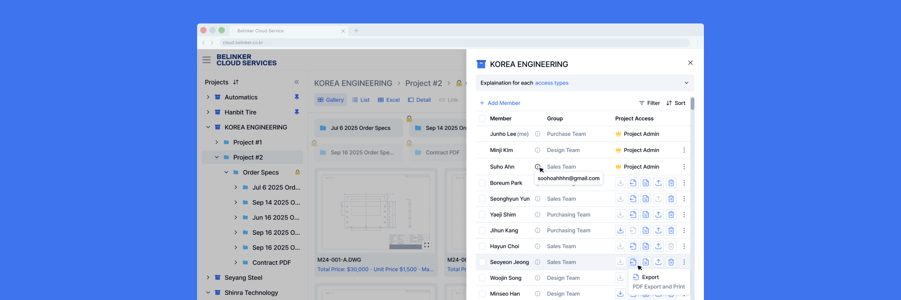
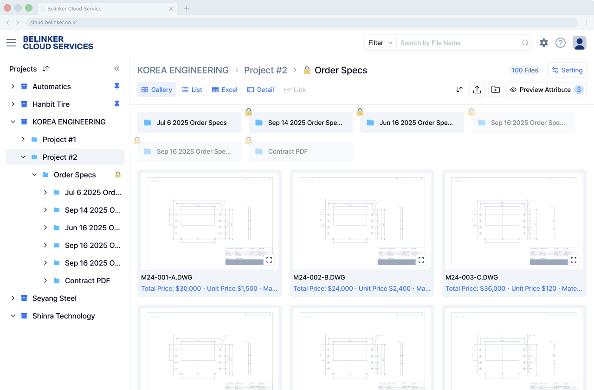

Belink Cloud Project: Access Control
| Role | UX Designer |
|---|---|
| Team Member | Myself Leehyun Moon Yeongyu Kim |
| Company | Belinker |


| Role | UX Designer |
|---|---|
| Team Member | Myself Leehyun Moon Yeongyu Kim |
| Company | Belinker |
Belinker Cloud Service is Drawing Management System for Manufacturers. Users can make projects and create folders inside them to organize files.
